|
4-1-4-1
|
Côte d'Ivoire | 1 | - | 2 | Norway |
4-3-3
|
| HT 0-1 | ||||||
|
FIFA World CupTuesday 30 June 2026
|
||||||
- Venue
- Dallas Stadium
- Attendance
- 69,665
- Referee
- Jesús Noel Valenzuela Sáez
- 2
Substitution60'
C. Inao Oulaï
A. Diallo
A. Bonny
E. Wahi
Goal74'
A. Diallo
Assist: N. Pépé
Substitution87'
N. Pépé
O. Diakité
- 2
Substitution90+3'
Y. Diomande
E. Guessand
G. Konan
B. Touré
Whistle45+4'
45+4'
Goal39'
A. Nusa
Assist: M. Ødegaard
Yellow card45+1'
A. Nusa
- 2
Substitution71'
A. Nusa
A. Schjelderup
A. Sørloth
O. Bobb
Substitution83'
M. Pedersen
F. Aursnes
Goal86'
E. Haaland
Assist: P. Berg
Côte d'Ivoire | |
|---|---|
Goalkeeper | |
| 1 | Y. Fofana |
Defender | |
| 3 | G. Konan 90+3' |
| 7 | O. Kossounou |
| 17 | G. Doué |
| 20 | E. Agbadou |
Midfielder | |
| 8 | F. Kessie |
| 11 | Y. Diomande 90+3' |
| 18 | I. Sangaré |
| 19 | N. Pépé 87' |
| 26 | C. Inao Oulaï 60' |
Forward | |
| 9 | A. Bonny 60' |
Substitutes | |
| 12 | E. Wahi 60' |
| 14 | O. Diakité 87' |
| 15 | A. Diallo 60'74' |
| 22 | E. Guessand 90+3' |
| 24 | B. Touré 90+3' |
Norway | |
Goalkeeper | |
| 1 | Ø. Nyland |
Defender | |
| 3 | K. Ajer |
| 5 | D. Møller Wolfe |
| 16 | M. Pedersen 83' |
| 17 | T. Heggem |
Midfielder | |
| 6 | P. Berg |
| 8 | S. Berge |
| 10 | M. Ødegaard |
Forward | |
| 7 | A. Sørloth 71' |
| 9 | E. Haaland 86' |
| 20 | A. Nusa 39'45+1'71' |
Substitutes | |
| 14 | F. Aursnes 83' |
| 21 | A. Schjelderup 71' |
| 22 | O. Bobb 71' |


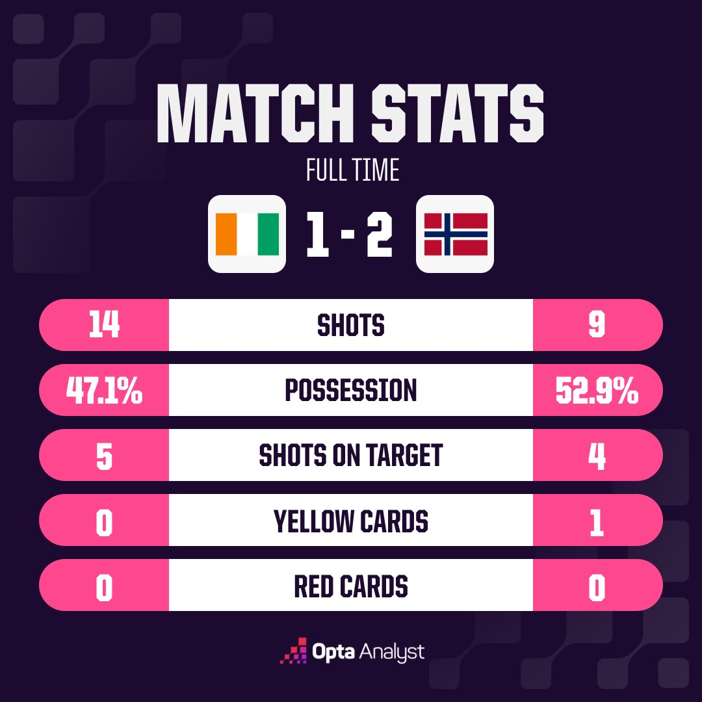
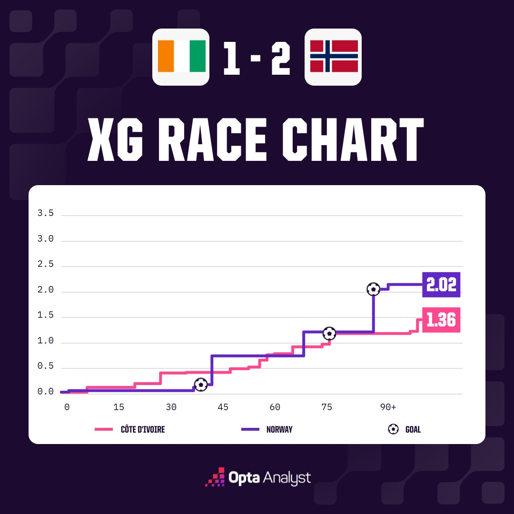
99'
Norway attempted 9 shots in this game, their lowest total in a single match in the 2026 FIFA World Cup.
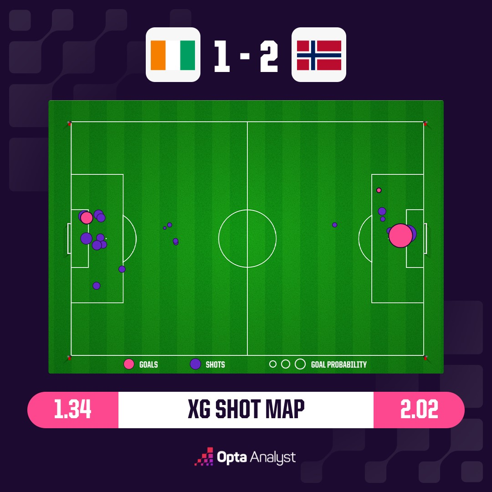
90+8'
FULL-TIME! The referee sounds the final whistle, and it’s all over. Norway get the win, with a 1-2 triumph over Côte d'Ivoire.
90+8'
MISS! How has that not gone in? A complete lack of composure shown from Evann Guessand, who squanders a golden chance for Côte d'Ivoire, whose coach looks on frustrated from the touchline. A real let off for Norway!
90+7'
It’s backs to the wall now — Norway throwing everything into defending their advantage, with a flurry of crucial interventions.
90+6'
Côte d'Ivoire win a corner after Amad Diallo sees a shot diverted wide by Ørjan Nyland. Can Côte d'Ivoire make this opportunity count, or will Norway defend this?
90+5'
Can Côte d'Ivoire make this chance count? They have won a free-kick in a threatening position after a foul from Martin Ødegaard on Ibrahim Sangaré. Will Norway's defence be tested here?
90+3'
A substitution for Côte d'Ivoire sees Ghislain Konan replaced by Bazoumana Touré. There does not appear to be any obvious sign of an injury, so that is a tactical switch.
90+3'
Côte d'Ivoire are making a tactical change. Yan Diomande is leaving the field and in their place comes Evann Guessand – we will soon see if this switch has the desired impact.
90+2'
A free-kick to Norway, as Yan Diomande goes in and fouls Fredrik Aursnes. However, Côte d'Ivoire will not mind giving one away in this area too much, with plenty of distance to their goal.
90+2'
It’s backs to the wall now — Norway throwing everything into defending their advantage, with a flurry of crucial interventions.
90+1'
A chance goes begging as Andreas Schjelderup gets off a shot that does not hit the target. They might have done better with that one, but instead it is a goal-kick to Côte d'Ivoire.
88'
A foul from Guéla Doué on Andreas Schjelderup sees Norway win a free-kick, but it is not in a dangerous position, so Côte d'Ivoire should be confident they can defend it easily enough.
87'
Nicolas Pépé’s match is over as Côte d'Ivoire decide to make a substitution. Oumar Diakité enters the field in what looks like a tactical change.
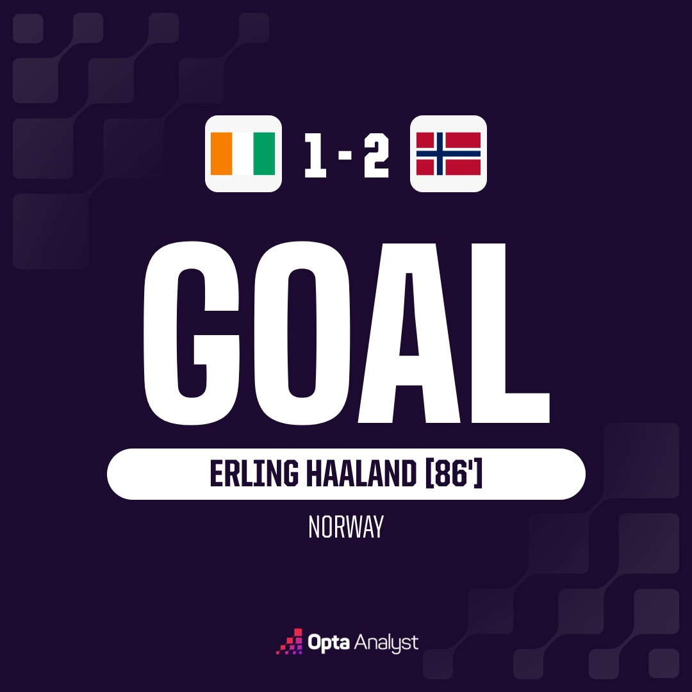
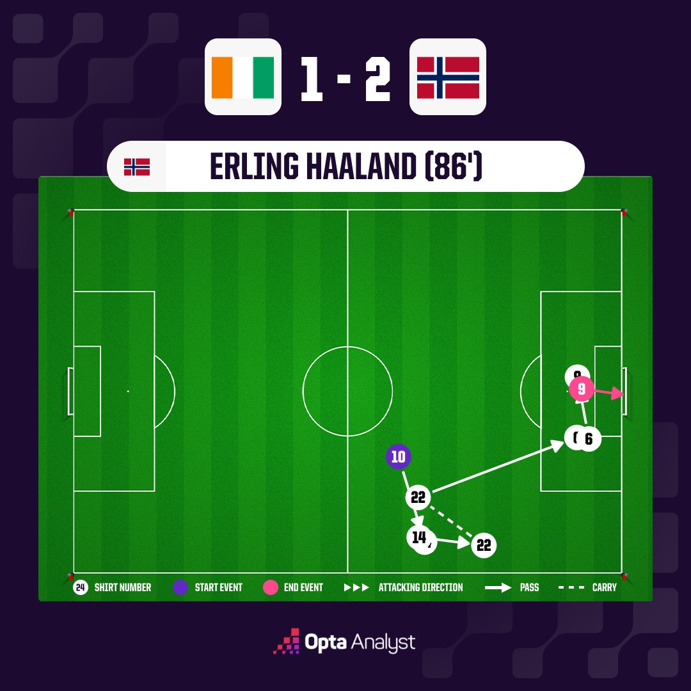
86'
Patrick Berg has assisted his second goal in the 2026 FIFA World Cup.
86'
GOAL! What a moment for Erling Haaland, who pops up with a huge, late goal for Norway, finishing from inside the box. Can Côte d'Ivoire find a way back into this one with such little time left?
86'
Erling Haaland has scored his fifth goal in the FIFA World Cup.
84'
This game is certainly in a bit of a lull now, with neither team having had an attempt at goal in the past 10 minutes. It could do with something to spark it into life. Norway have had more possession during the quiet spell, but are yet to do much with it.
83'
A substitution for Norway sees Marcus Pedersen replaced by Fredrik Aursnes. There does not appear to be any obvious sign of an injury, so that is a tactical switch.
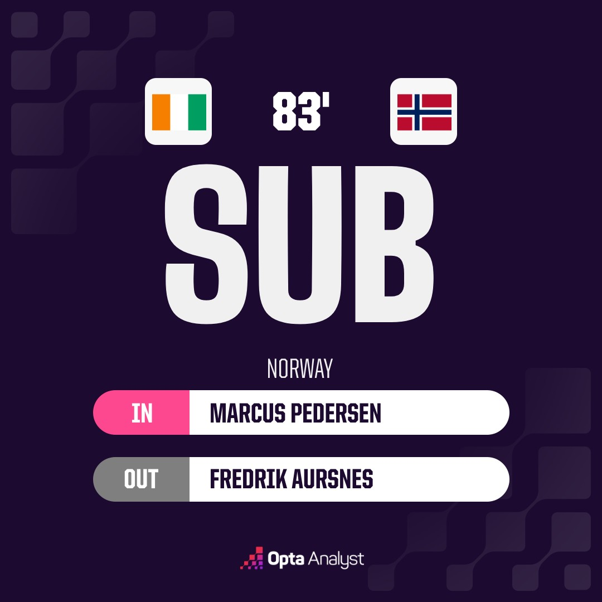
79'
That is offside! Côte d'Ivoire are pushing for a goal but Amad Diallo is a little bit too eager, and just strays offside in the build-up, in what was a promising attacking move.
74'
Nicolas Pépé has assisted his first goal in the 2026 FIFA World Cup.
74'
GOAL! Côte d'Ivoire drag themselves level thanks to Amad Diallo's effort from inside the area. It's all square!
74'
Amad Diallo has scored his second goal in the 2026 FIFA World Cup, netting for the first time since 15th June 2026 against Ecuador.
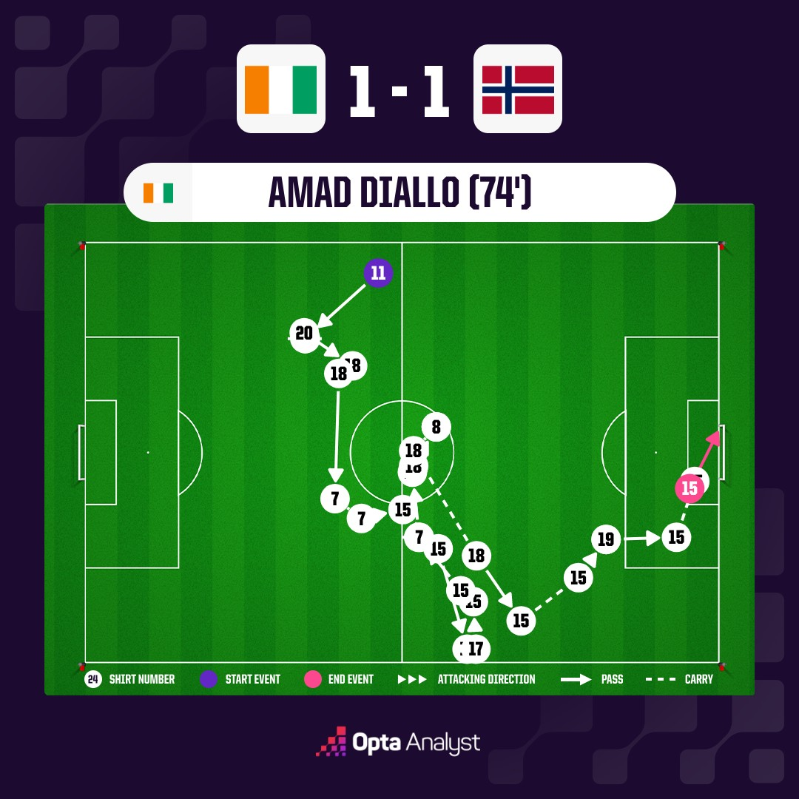
72'
No luck! Ghislain Konan takes on a shot that, had they got it right, might have been set to test the goalkeeper, but instead it is sent off target and Norway come away unscathed.
71'
Alexander Sørloth’s match is over as Norway decide to make a substitution. Oscar Bobb enters the field in what looks like a tactical change.
71'
A substitution for Norway sees Antonio Nusa replaced by Andreas Schjelderup. There does not appear to be any obvious sign of an injury, so that is a tactical switch.
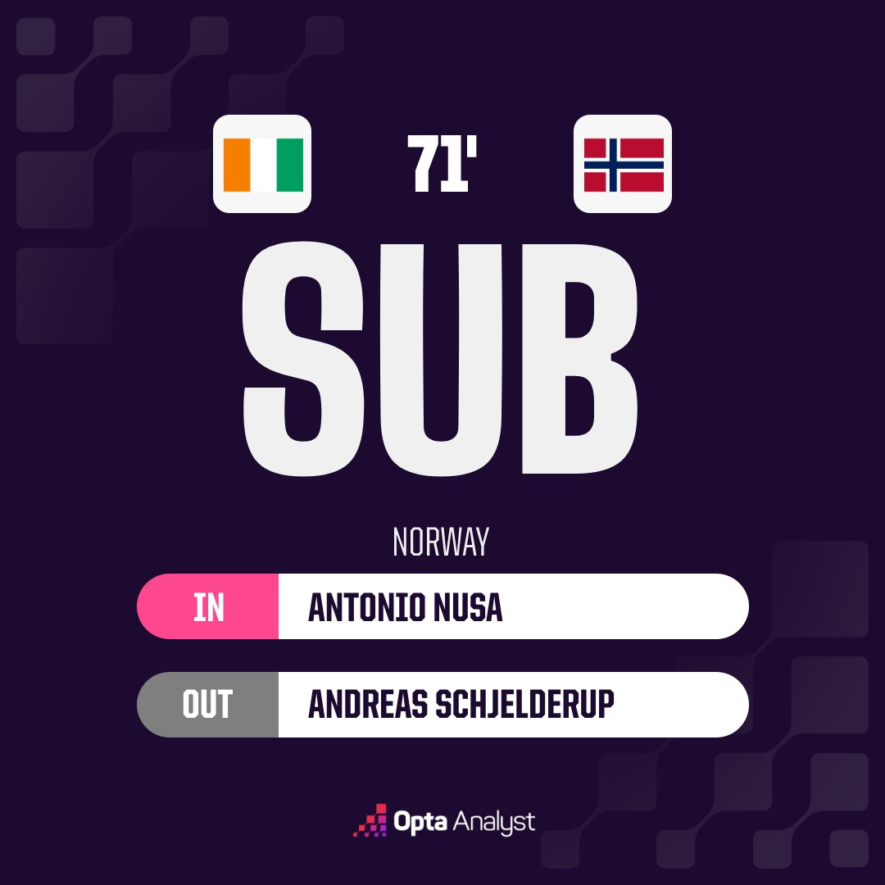
70'
Côte d'Ivoire are having plenty of the ball, with 68.75% possession in the last 15 minutes. However, they have been unable to transfer that possessional dominance into a goal during that period.
68'
The Côte d'Ivoire defence steps up in time and there is a frustration for Antonio Nusa, who thought they were through until the flag goes up to signal offside.
66'
What a miss! That is a bad finish from Torbjørn Heggem, who has been unable to convert from a good opportunity, seeing a big chance for Norway to extend their lead go begging. Will Côte d'Ivoire make them pay for that profligacy?
66'
With 65 minutes gone, it is Norway who lead the shot count, with 6 to Côte d'Ivoire’s 10. Norway have got 2 on target, while Côte d'Ivoire have managed to get 3 on target.
64'
It’s backs to the wall now — Norway throwing everything into defending their advantage, with a flurry of crucial interventions.
64'
MISS! A shot from Guéla Doué ends up being off target. They might have done a bit better with that one, but it remains Côte d'Ivoire 0-1 Norway.
64'
Côte d'Ivoire have attempted the last 6 shots in this game, Norway last shot was taken by Alexander Sørloth in the 42nd minute.
63'
Can Norway survive here? They will have some defending to do after the ball is turned behind for a corner kick. Will Côte d'Ivoire take this opportunity and grab the goal they have been pushing for?
61'
A rash challenge from Martin Ødegaard, who sends Ghislain Konan tumbling, giving Côte d'Ivoire a free-kick. It is not in a threatening position, but it gives them a chance to get back on the ball.
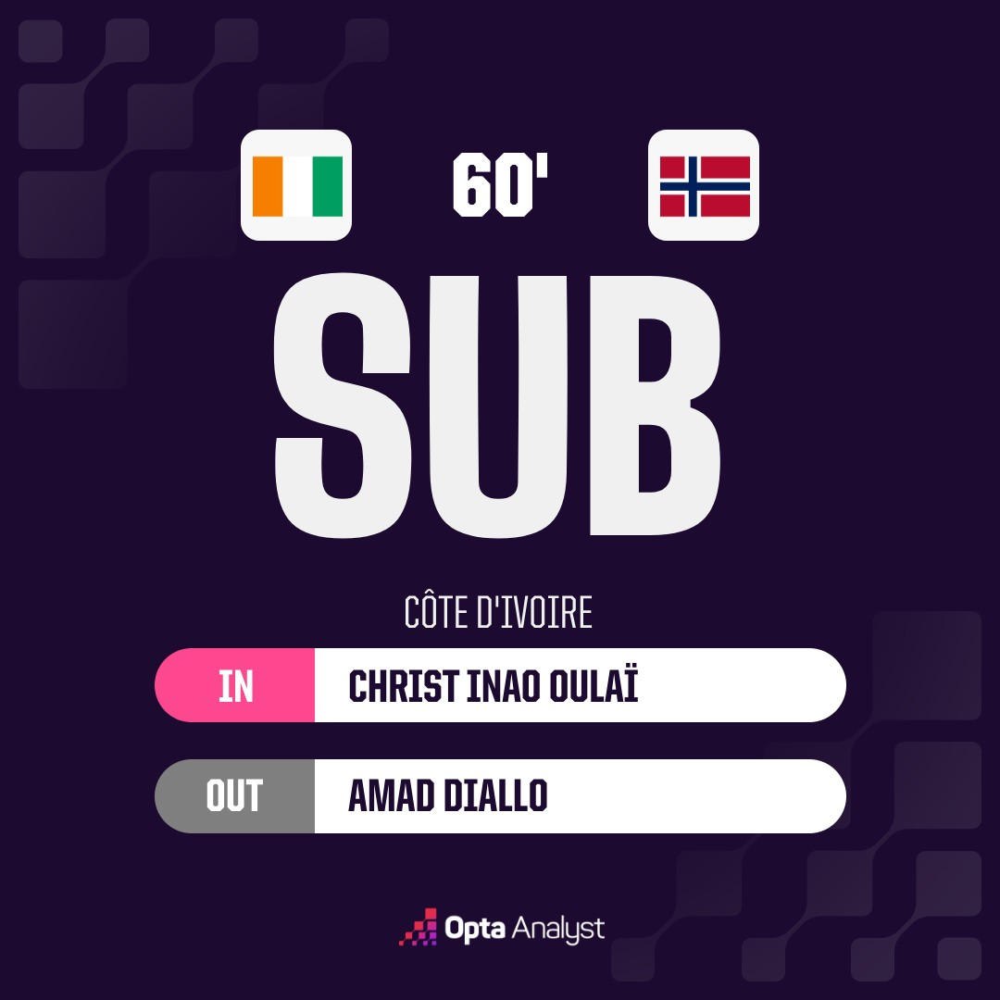
60'
The Côte d'Ivoire manager is looking to the substitutes’ bench, bringing on Elye Wahi in place of Ange Bonny. Will the change make a difference? Let’s find out!
60'
Côte d'Ivoire are making a tactical change. Christ Inao Oulaï is leaving the field and in their place comes Amad Diallo – we will soon see if this switch has the desired impact.
59'
MISS! A shot from Emmanuel Agbadou ends up being off target. They might have done a bit better with that one, but it remains Côte d'Ivoire 0-1 Norway.
57'
Can Norway make this chance count? They have won a free-kick in a threatening position after a foul from Ibrahim Sangaré on Martin Ødegaard. Will Côte d'Ivoire's defence be tested here?
57'
SHOT! Franck Kessie manages to get a shot off from inside the area, but although it was heading in, they cannot get enough on it to beat Ørjan Nyland, who makes the save.
57'
Excellent defensive work from Norway; their organization and success in key duels are effectively safeguarding their lead.
55'
Chance! A shot from inside the area from Nicolas Pépé was heading in, but Ørjan Nyland makes a fine stop to keep it out. A big save from the Norway shot-stopper!
52'
MISS! A shot from Ibrahim Sangaré ends up being off target. They might have done a bit better with that one, but it remains Côte d'Ivoire 0-1 Norway.
51'
Great defending from Norway, who are staying organised and winning key battles to preserve their lead.
47'
A free-kick to Côte d'Ivoire, as Marcus Pedersen goes in and fouls Yan Diomande. However, Norway will not mind giving one away in this area too much, with plenty of distance to their goal.
46'
The Norway defence steps up in time and there is a frustration for Ange Bonny, who thought they were through until the flag goes up to signal offside.
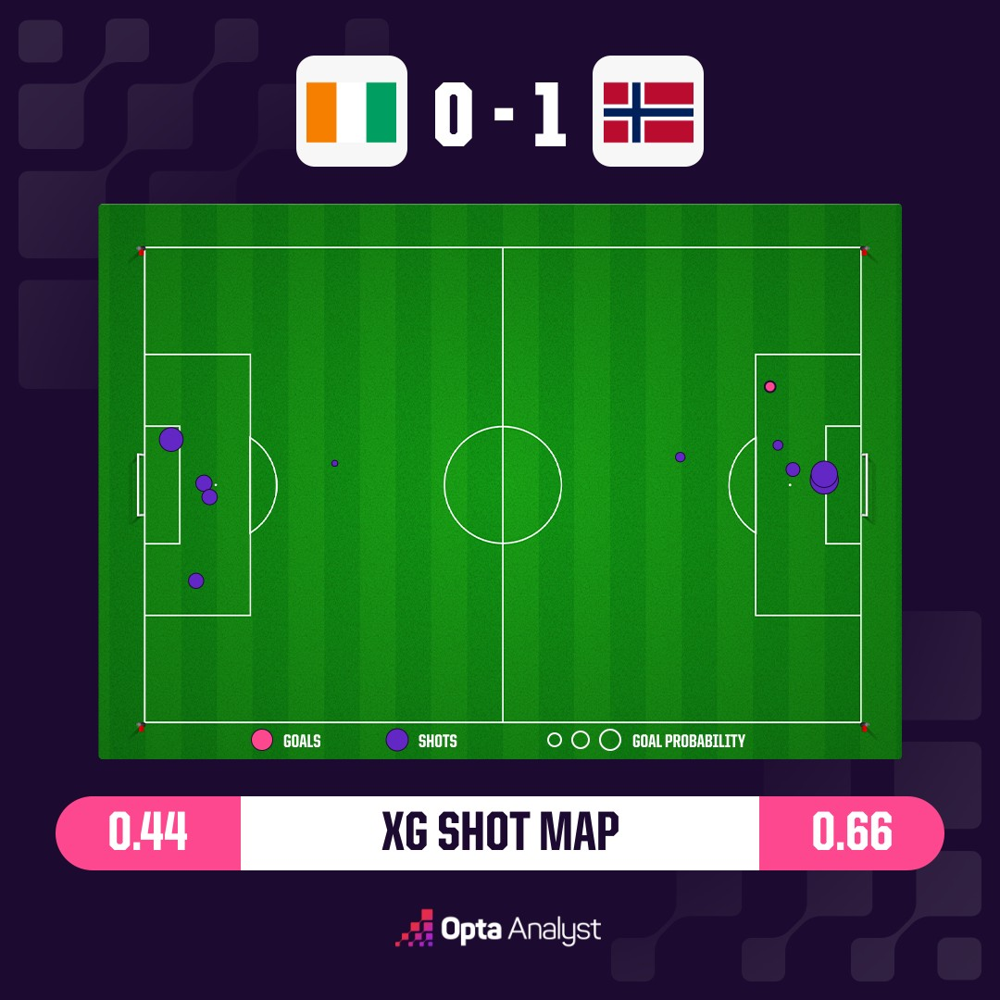
45+5'
Half-time! We reach the interval at Dallas Stadium and it is Norway who have a 0-1 lead over Côte d'Ivoire. Can they hold on and see this out in the second half?
45+2'
MISS! A shot from Emmanuel Agbadou ends up being off target. They might have done a bit better with that one, but it remains Côte d'Ivoire 0-1 Norway.
45+1'
Yellow card! Antonio Nusa will have to be careful from now on after they are cautioned.
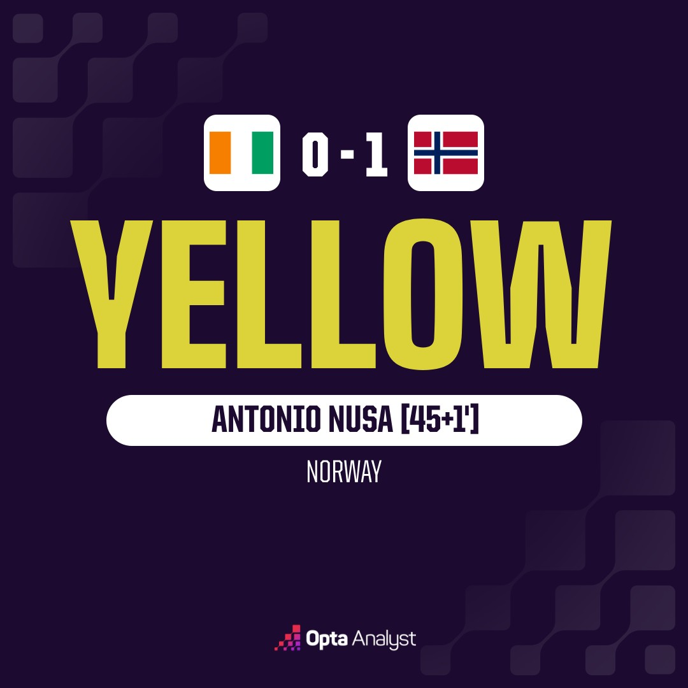
45+1'
A free-kick in a dangerous position now for Côte d'Ivoire, after a foul from Antonio Nusa on Guéla Doué. Can Côte d'Ivoire make Norway pay for that rashness from Antonio Nusa?
45+1'
Can Norway survive here? They will have some defending to do after the ball is turned behind for a corner kick. Will Côte d'Ivoire take this opportunity and grab the goal they have been pushing for?
42'
MISS! Alexander Sørloth fluffs their lines, and will Norway be made to pay for that miss? Côte d'Ivoire could have been down and out if that attempt had gone in, but at least they have not fallen even further behind in this contest.
42'
MISS! Erling Haaland fluffs their lines, and will Norway be made to pay for that miss? Côte d'Ivoire could have been down and out if that attempt had gone in, but at least they have not fallen even further behind in this contest.
39'
Martin Ødegaard has assisted his third goal in the 2026 FIFA World Cup.
39'
Antonio Nusa has scored his first goal in the 2026 FIFA World Cup.
39'
GOAL! Norway move in front! Antonio Nusa provides the decisive touch from inside the penalty area to leave Côte d'Ivoire chasing the game. It is too early to predict whether that will prove the winner, but as things stand Norway have the advantage!
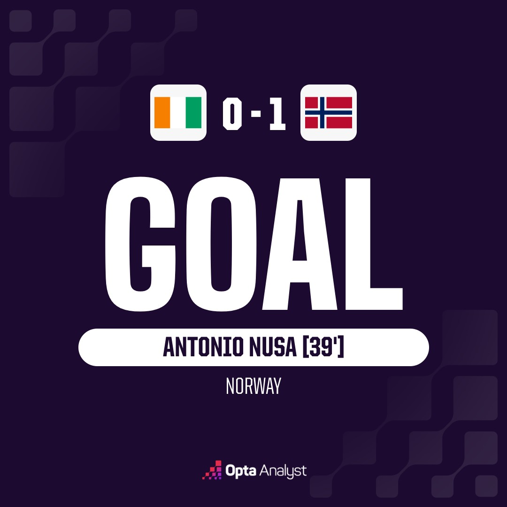
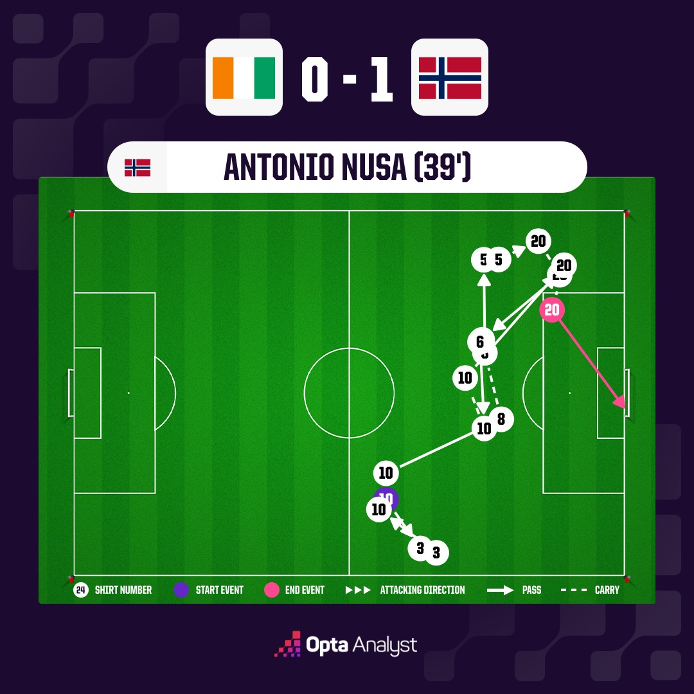
38'
BLOCKED! That was close. Martin Ødegaard got off a shot, which was heading in, but Ibrahim Sangaré was on hand to make a vital intervention. Great block!
37'
Free-kick! A foul from Alexander Sørloth on Yan Diomande. It is well away from Norway’s goal, so it is unlikely to result in a chance for Côte d'Ivoire.
37'
Save! A big stop from Yahia Fofana, who reacts to keep out Erling Haaland's attempt from inside the area.
35'
Emmanuel Agbadou goes for goal with a strike from distance, but Ørjan Nyland is able to watch it all the way and make the save. A bit of a tester, there.
34'
Corner! The ball goes behind and now Côte d'Ivoire will aim to deliver a good ball into the penalty area and test that Norway defence, which has been frustrating them in recent minutes.
33'
In the last 15 minutes, it is Norway who have dominated the ball, having seen 65.49% of the possession, yet they have not been able to go and turn that into a single shot, so there is no imminent sign of a goal.
33'
It has been 30 minutes since Norway last attempted a shot in this game.
31'
It is a corner now to Côte d'Ivoire, with Norway somewhat hanging on here as they look to hold out for a positive result. Can Côte d'Ivoire make something of this set-piece opportunity?
30'
Corner! The ball goes behind and now Côte d'Ivoire will aim to deliver a good ball into the penalty area and test that Norway defence, which has been frustrating them in recent minutes.
28'
It is a corner now to Côte d'Ivoire, with Norway somewhat hanging on here as they look to hold out for a positive result. Can Côte d'Ivoire make something of this set-piece opportunity?
28'
WHAT A MISS! Oh dear, oh dear, that is an awful attempt from Nicolas Pépé, as a huge chance for Côte d'Ivoire to score the goal they need goes begging. What a let off for Norway, though. They will have to defend better than that from here on out!
23'
Free-kick! A foul from David Møller Wolfe on Yan Diomande. It is well away from Norway’s goal, so it is unlikely to result in a chance for Côte d'Ivoire.
21'
No luck! Ghislain Konan takes on a shot that, had they got it right, might have been set to test the goalkeeper, but instead it is sent off target and Norway come away unscathed.
18'
A lull in this match, as the teams prob and probe, but without much success. It has been 10 minutes since there was an attempt from either side, though Côte d'Ivoire are seeing more of the ball, with 62 per cent possession to Norway’s 38 per cent during that time.
12'
Confident start by Côte d'Ivoire, knocking it around with purpose and keeping control in the opening phase.
11'
A foul from David Møller Wolfe on Nicolas Pépé sees Côte d'Ivoire win a free-kick, but it is not in a dangerous position, so Norway should be confident they can defend it easily enough.
8'
Corner! The ball goes behind and now Côte d'Ivoire will aim to deliver a good ball into the penalty area and test that Norway defence, which has been frustrating them in recent minutes.
8'
A chance goes begging as Yan Diomande gets off a shot that does not hit the target. They might have done better with that one, but instead it is a goal-kick to Norway.
6'
It’s been tight so far, and Côte d'Ivoire are making sure it stays that way with strong defensive discipline and well-timed clearances.
5'
Free-kick! A foul from Guéla Doué on Antonio Nusa. It is well away from Côte d'Ivoire’s goal, so it is unlikely to result in a chance for Norway.
3'
No luck – it’s offside! Alexander Sørloth looked to dart in behind and get on the end of a pass, yet they just went too early, and the flag is up to signal offside.
3'
Great block from Odilon Kossounou, as they get in the way of an attempt from Erling Haaland that might have been set to cause the goalkeeper some problems. Solid defending from the Côte d'Ivoire player.
1'
We are under way as Côte d'Ivoire kick off at Dallas Stadium. Let's hope an entertaining contest is in store.
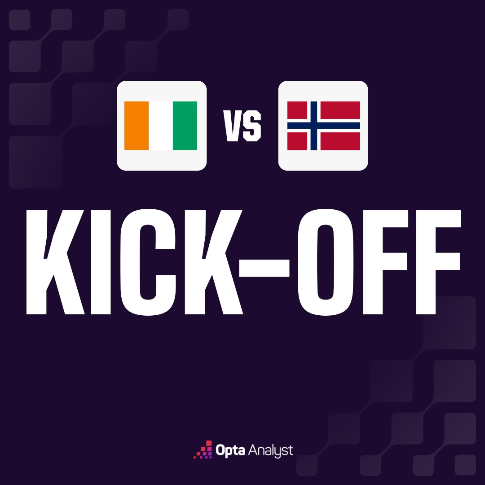
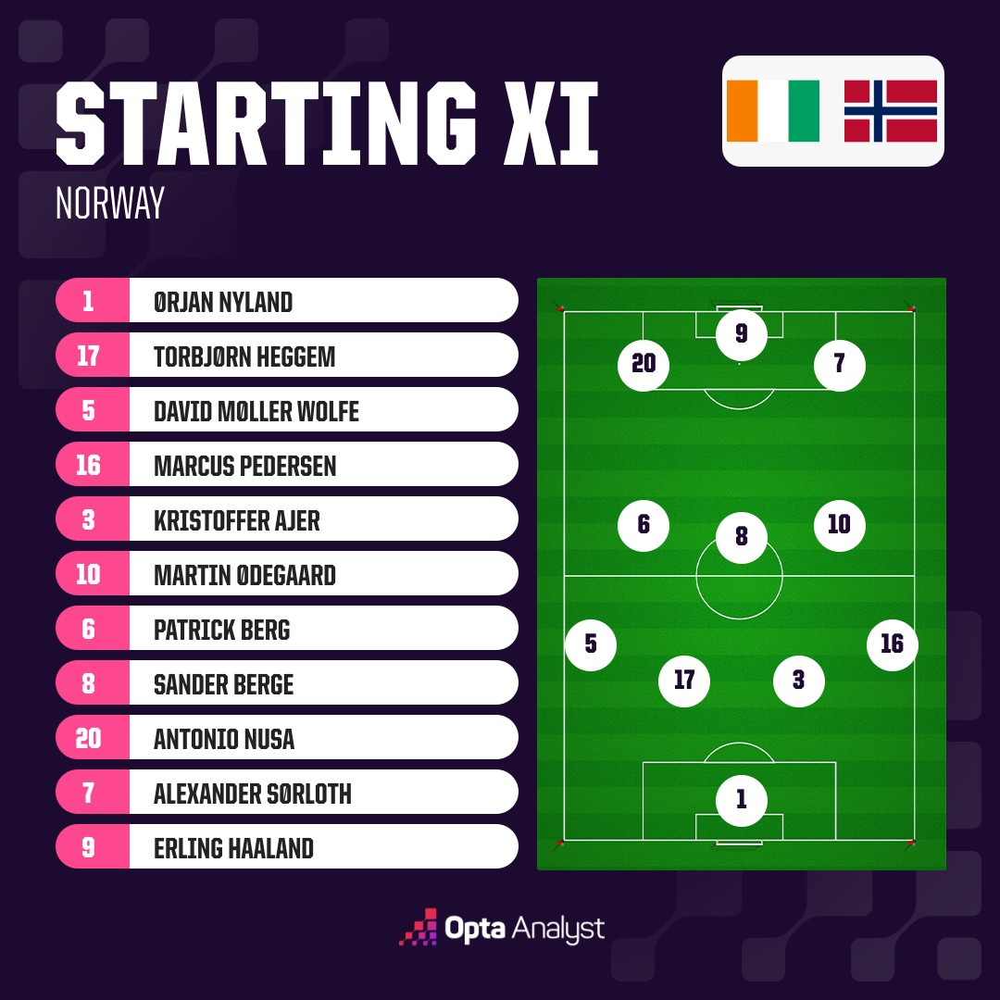
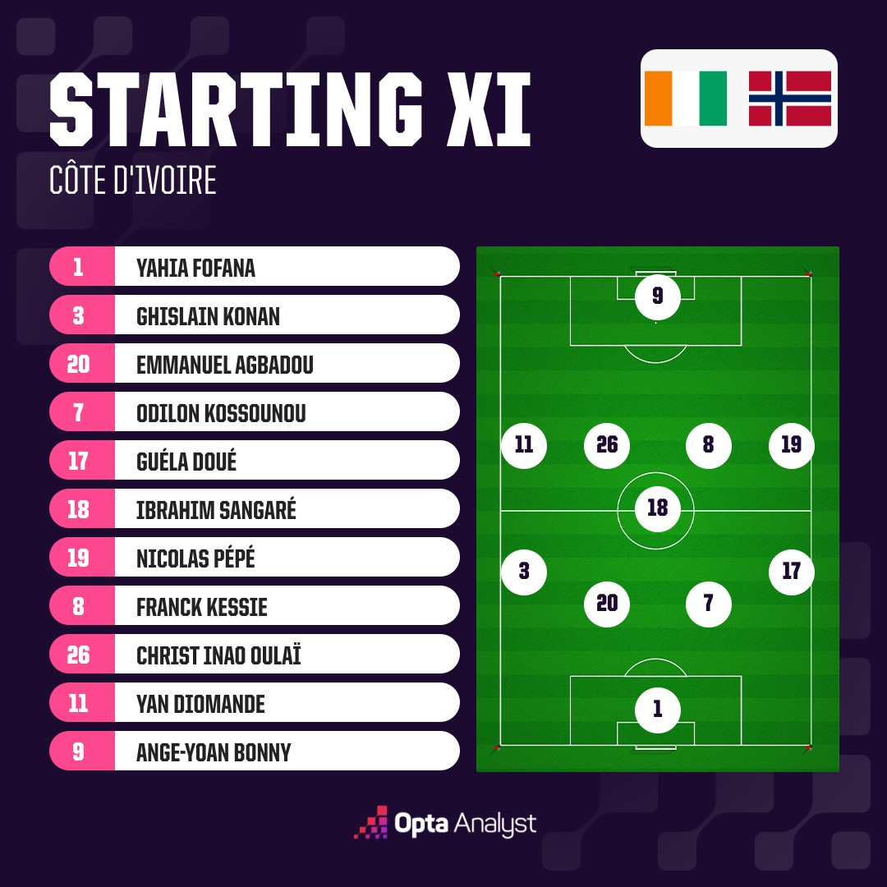
Norway have won their last 6 away matches in a row
There have been 3 or more goals scored in each of Norway's last 7 games
Côte d'Ivoire face Norway on Tuesday for a FIFA World Cup Round of 32 clash at Dallas Stadium.
Côte d'Ivoire defeated Curaçao 2-0 in their last group stage match on June 25. Nicolas Pépé was the only player on the scoresheet, netting a brace. In eight games this year, they have six wins and two losses.
Norway's last group stage game saw them beaten for the first time in the competition this year 4-1 by France on June 26 at Boston Stadium. Thelo Aasgaard was the sole player to net in the loss. In 2026, they have won three, drawn two, and lost two.
Both sides finished second in their respective groups on six points.
Pépé has caught the eye for Côte d'Ivoire in World Cup play. He is their leading scorer with two goals, one of those having been the critical first of the match. Erling Haaland has been the most prolific player for Norway, scoring on four occasions in the current World Cup campaign, including one match-opening goal. He is tied for second in the competition's scoring charts.
Both sides are on World Cup scoring streaks, as each have been on the scoresheet in every match in the competition this season.
In their last six matches in all competitions, Côte d'Ivoire have won five and lost one. The Ivorian side scored 11 and conceded three in that stretch, scoring first in five of the six contests. They had five first-half goals, while their opponents netted once in the first 45 minutes. The Norwegian side have won three, drawn two and lost one in their last six. The Norwegian side scored 12 and conceded nine in that stretch, netting first in three of the six. Most of their goals (seven) came in the first half, while their opponents netted five times before the break.
-
General
Possession 47.1% 47.07252.92852.9% Possession lost in defensive half 25 252323 Possession lost in middle third 39 393636 Duels 93 939292 Duels success rate 52.7% 52.68844.56544.6% Aerial duels 27 272727 Aerial duels won 40.7% 40.74159.25959.3% Successful dribbles 7 733 Fouls won 7 766 Offsides 2 222 Corner awarded 14 1433 -
Distribution
Passes 401 401473473 Long passes 38 383232 Long passes proportion (%) 9.5% 9.4766.7656.8% Passing accuracy 84.5% 84.53987.73887.7% Passes in opponents' half 212 212227227 Passing accuracy in opponents' half (%) 81.6% 81.60481.05781.1% Total passes in the final third 129 129136136 Passing accuracy in final third (%) 78.3% 78.29577.94177.9% Forward passes 247 247283283 Forward passes (%) 61.6% 61.59659.83159.8% Through balls 2 222 Final third entries 38 384949 Penalty area entries 39 392020 Total open play crosses 17 1766 Crosses 29 291010 Crossing accuracy 24.1% 24.1385050.0% -
Attack
Goals 1 122 Shots 14 1499 Shots on target 5 544 Blocked shots 0 033 Headed shots 3 333 Shots outside the box 4 411 Shots inside the box 10 1088 Shots accuracy excluding blocked shots 35.7% 35.71466.66766.7% Shooting accuracy 35.7% 35.71444.44444.4% Key Passes 9 988 -
Defence
Tackles 24 241919 Tackles success rate 75.0% 7557.89557.9% Clearances 11 113737 Interceptions 4 466 Recoveries 44 443434 Attacking third recovery 6 633 Defensive third recovery 26 262424 Midfield third recovery 12 1277 Recoveries in attacking half (%) 13.6% 13.6368.8248.8% -
Discipline
Fouls conceded 6 677 Yellow cards 0 011 Red cards 0 000